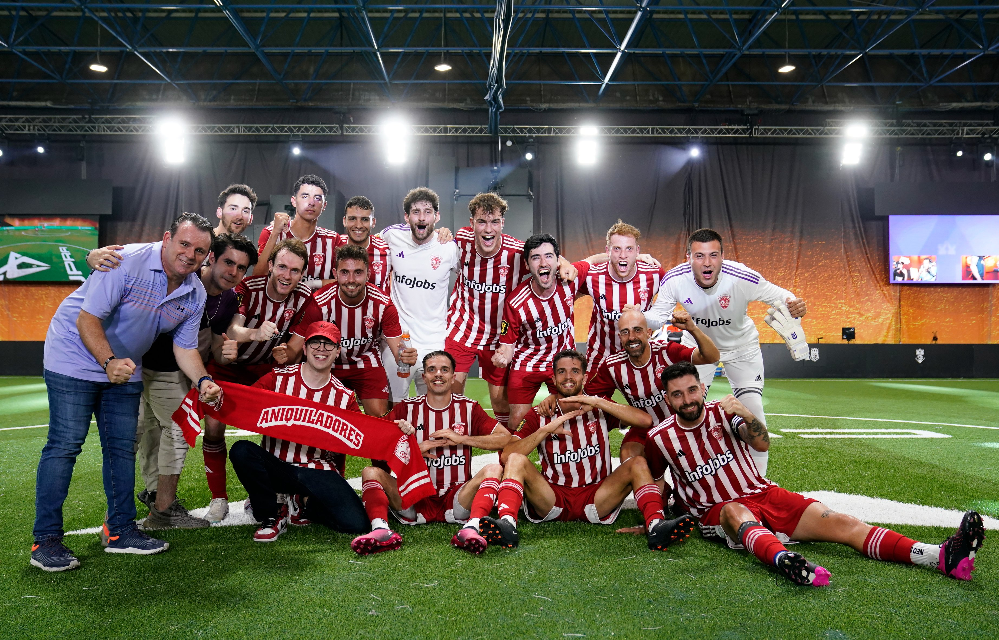

Juan Guarnizo
Juan Sebastián Guarnizo Algarra, mejor conocido como Juansguarnizo o simplemente Juan, es un streamer y youtuber colombiano naturalizado mexicano, originalmente de Ibagué, Colombia. Juan Guarnizo es uno de los streamers más importantes de la comunidad hispanohablante.
Es presidente de un club de la Kings League “Aniquiladores” y pertenece al grupo "esos 4" Ha participado en series de la comunidad hispanohablante. Esta casado con la tambien streamer hispanohablante AriGameplays.
Canales
Su canal principal en YouTube es JuanSGuarnizo en el cual sube cosas que graba mientras está en directo y el cual cuenta con 6.4 millones de suscriptores.
Su canal donde Principalmente se encuentra activo la mayor parte de los días es JuanSGuarnizo en Twitch en donde cuenta con 11 Millones de seguidores que a ganado a través de los años.
Tiene un canal secundario llamado ElJuaniquilador el cual sube Contenido que no publica en su canal principal el cual cuenta con 2,6 millones de suscriptores.
Aniquiladores FC
Aniquiladores es el equipo de Kings League presidido por el colombiano Juan Guarnizo. El nombre viene del canal secundario del streamer en YouTube, Eljuaniquilador y el logo es una versión modificada del propio canal
Su presencia en el equipo aporta su experiencia como creador de contenido y su influencia en la comunidad de gamers.